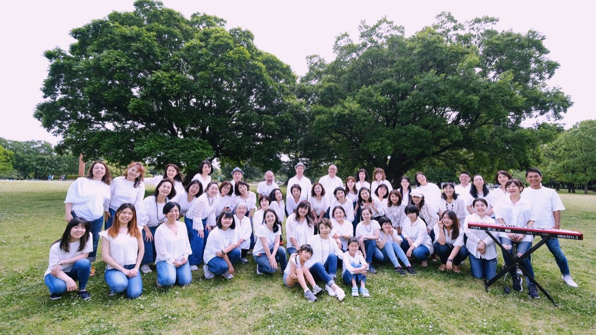
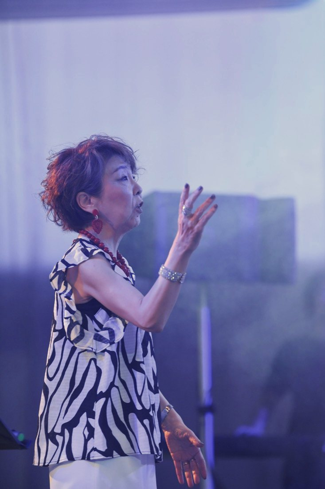
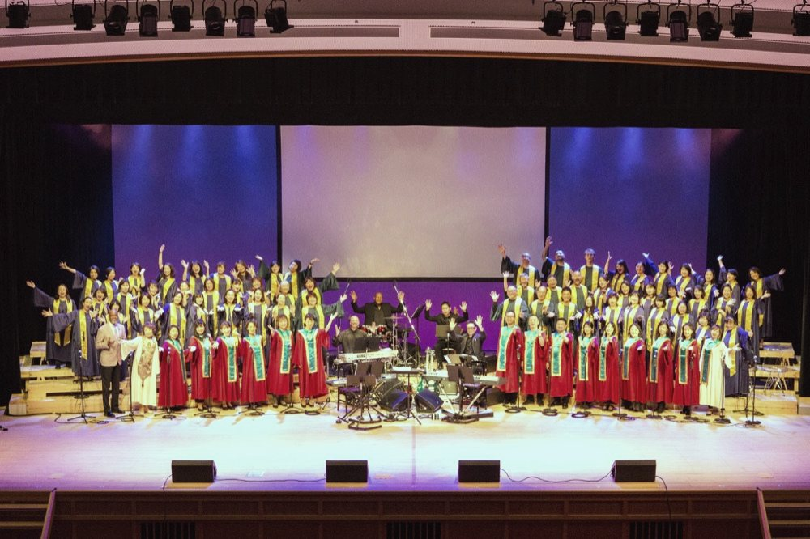
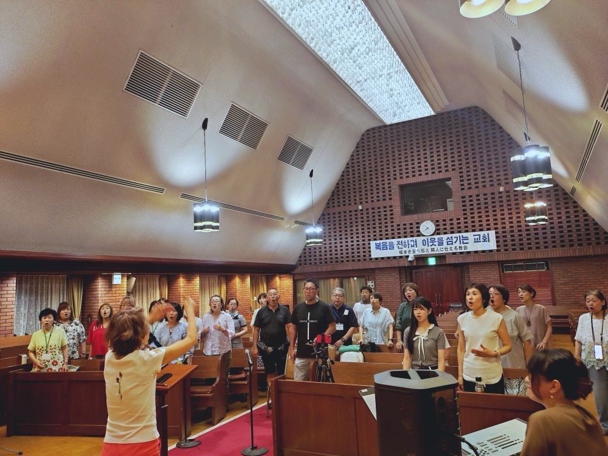
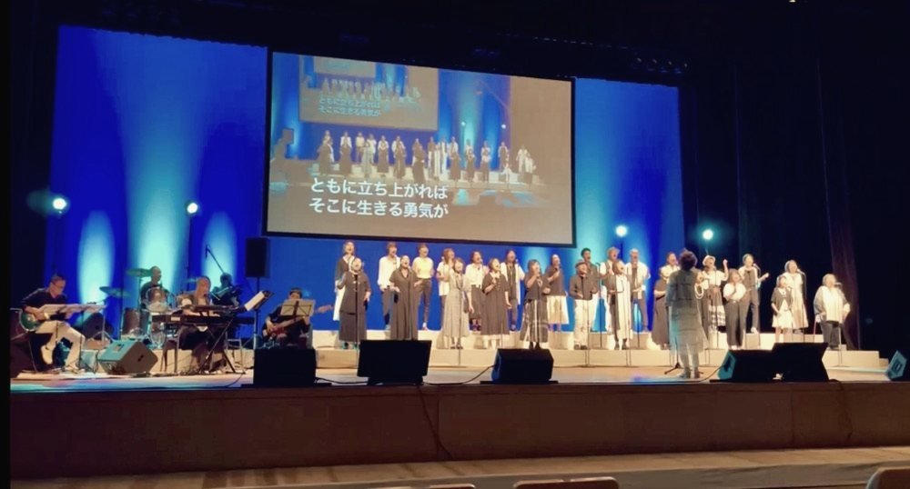
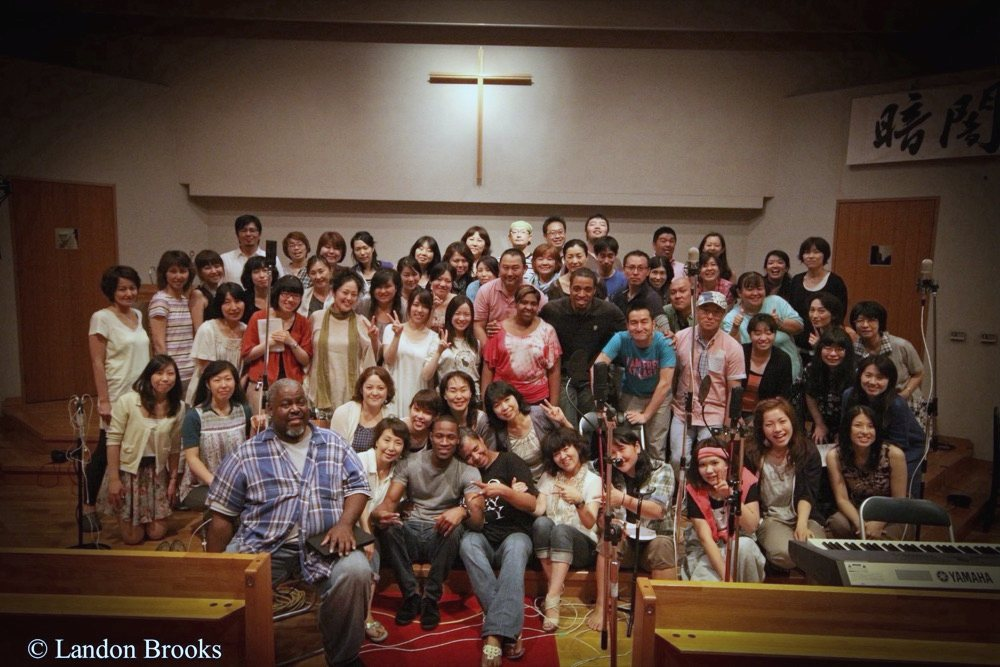
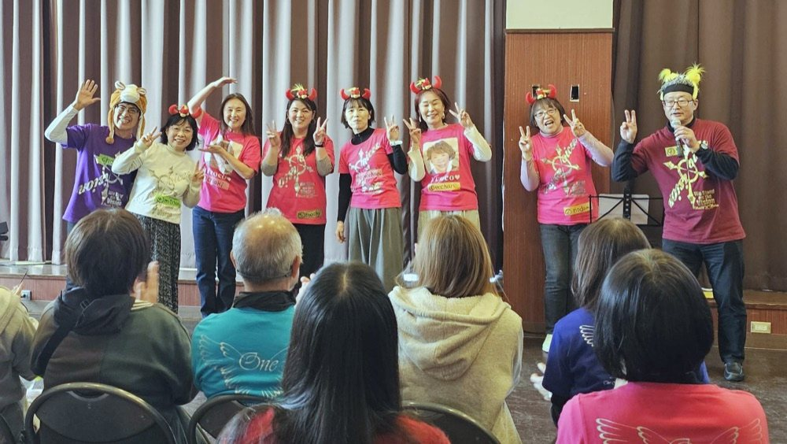

春のワークショップを開催しました
新メンバーも交えて、ゴスペルの基礎から楽しく学びました。

Voices of Vision
Voices of Vision（VOV）は、創設者ラニー・ラッカー氏が提言する "Music" "History" "Christianity" を体現し、多くの人の心に届くよう歌い続けていくことを目的に活動する、名古屋のゴスペルクワイアです。経験も、信仰も問いません。
「オーディションなし。楽譜なし。歌が好きな気持ちだけ持ってきてください。」
Music · History · Christianity
ルーツに根差したゴスペルを。

VOVは、創設者ラニー・ラッカー氏が提言する3つの柱を体現し、多くの人の心に届くよう歌い続けていくことを目的に活動しています。
ゴスペルのルーツであるキリスト教を大切に活動していますが、個人の信仰は問いません。現在メンバーのうちクリスチャンは約2〜3割。歌が好きな方なら、どなたでも歓迎します。
主に、夜リハ・朝リハ・ユースの3つのリハーサルがあります。
メンバーは、どのリハーサルにも参加できます。
19:00 〜 21:00
在日大韓基督教会 名古屋教会 7F（名古屋市中村区・名古屋駅から徒歩約10分）
・定期リハーサル（原則第2・4木曜）※チーフディレクター指導。
・自主リハーサル（原則第1・3木曜）
10:30 〜 12:30
金山クリスチャンセンター 1階（名古屋市中区金山2-1-3）
原則第1・3金曜 ※チーフディレクター指導。
第1木曜 19:00 〜 20:30／第2木曜 19:00 〜 20:00
在日大韓基督教会 名古屋教会 7F ロビー
高校生〜25歳までのユース世代クラス。同世代の仲間と一緒に、ゴスペルを楽しめます。
VOVの活動は、メンバーの会費で運用されています。
一般会員：4,000円／月
学生料金など、各種割引料金あります。





Let's Celebrate
We Stand（DVDより切り出し予定）
1999年の創設から今日まで。VOVが紡いできた歴史の概要です。
5月 ラッカー・ゴスペル・ミニストリー主催「中部地区ブラック・ゴスペル・ワークショップ＆ゴールデンウィーク・ゴスペルライブ」を名古屋で初開催。
9月 ワークショップ参加者120名が中心となり、"名古屋ゴスペルクワイヤー" を発足。
メンバーからの公募で "Voices of Vision（VOV）" に改名。
兼松弘子のCD "Praise the Lord" レコーディングに参加。
TPW（アメリカ・アラバマ州）と初共演。以後、姉妹クワイアとして親交を深める。
VOV 1stアルバム "We Stand on the Vision" をリリース。
VOV 20周年記念コンサート "Time to Get Up!!!" を開催。